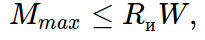
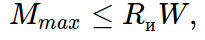

Расчет палубы (доски вертикально)
Рассмотрим альтернативный вариант установки досок палубы. До этого мы их располагали горизонтально. Теперь же, рассмотрим случай, когда они установлены вертикально. Обычно их так располагают, когда льют высокие узкие фундаменты или колонны, а пилить доски на короткие куски долго и просто жалко.
Пусть на этот раз у нас на палубу пойдут доски 125x25, для соединительных планок и схваток примем 125x40 мм. Высота колонной части фундамента будет 2.45 м, сечение 800х600 мм.
Далее нам потребуется рассчитать на прочность также 3 элемента: доску палубы, сшивную планку, схватку.
Сначала рассмотрим доску палубы. Расчетная схема для нее - балка, на которую действует распределенная треугольная нагрузка. Ширина площади для сбора нагрузок примем по ширине доски - 125 мм. Соответственно нагрузка в самом низу будет равна q = 2.5x2.45x0.125 = 0.766 т/м Шарнирными опорами для данной балки будут выступать наши сшивные планки, которые одновременно являются ребрами жесткости. Поэтому мы их и сделали из доски большего сечения. Высота их расположения: [0, 0.33h, 0.62h, 0.81h, h], что для высоты 2.45 м соответствует [0, 809, 1519, 1984, 2450][мм]Стоит заметить, что расстояния между шарнирными опорами для доски, уложенной плашмя - довольно условная величина. Равно как и координаты опор, т.к. доска сама довольно широкая... Поэтому для упрощения и в запас прочности принимаем, что шарнирная опора у нас располагается на середине сшивной планки. Для самого низа примем, что она на самом конце балки. Занудствовать с точностью не будем, т.к. мы работаем с МОДЕЛЯМИ и все существующие методы расчета также лишь моделируют поведение реальной конструкции. Поэтому забьем и будем надеяться на дальновидность советских ученых, заложивших нехилый запас прочности в расчетные характеристики конструкций.
Напомню основные формулы (уже без разжевывания):
Момент инерции высчитывается по формуле (для вычисления прогибов):
 Момент сопротивления сечения прямоугольного элемента:
Момент сопротивления сечения прямоугольного элемента:
 Максимальный изгибающий момент:

Rи = 13 МПа = 1,3 кН/см2-расчетное сопротивление изгибу вдоль волокон для сосны 2-го сорта (по табл. 3, СП 64.13330.2011).
Максимальный изгибающий момент:

Rи = 13 МПа = 1,3 кН/см2-расчетное сопротивление изгибу вдоль волокон для сосны 2-го сорта (по табл. 3, СП 64.13330.2011).
E = 10000 МПа- модуль упругости древесины вдоль волокон (для вычисления прогибов).
Получим:
I = 12.5 * 2.53/12 = 16.28 см4.
W = 12.5 * 2.5 2 / 6 = 13.02 см3
Mmax = 1.3кН/см 2 * 13.02см 3 = 16.93кН*см = 0.1693 кН*м.
Теперь рассмотрим работу сшивных планок. Для примера возьмем палубу для стенки шириной 800мм. Расчетная схема для нее - балка на двух опорах, где опорами являются схватки. Мы уже знаем, как расположить опоры так, чтобы изгибающие моменты были минимальны (см. рис.4). Решая несложное уравнение, получим, что длина консолей равна 165 мм, а длина пролета между опорами 470 мм. Расчетная схема изображена на рис.13. Из рисунка 12 видно, что максимальная сила, действующая на опору равна 3.118 кН. Она распределена по ширине доски равной 125мм. Следовательно, величина распределенной нагрузки равна q = 3.118кН/0.125м = 24.944кН/м
Расчетные характеристики для планок:
I = 12.5 * 43/12 = 66.67 см4.
W = 12.5 * 4 2 / 6 = 33.33 см3
Mmax = 1.3кН/см 2 * 33.33см 3 = 43.29кН*см = 0.4329 кН*м.
И для досок палубы, и для сшивных планок изгибающие моменты значительно меньше максимально допустимых. Осталось рассчитать схватки. Поскольку силы сравнительно небольшие, обойдемся всего двумя точками закрепления по высоте для каждой. Расчетная схема - балка на двух опорах, где внешние силы - реакции опор для сшивных планок, пересчитанные для каждой планки по отдельности (просто перемножим каждую опорную реакцию на коэффициент K = 9.978/3.118 = 3.2). Опоры в нашем случае - гайки шпилек. Расположение их определим методом подбора, хотя при желании, можно и аналитически. Из результата расчета ясно, что схватки проходят по прочности с большим запасом.
Расчетные характеристики для схваток:
I = 4 * 12.53/12 * 2 = 1302 см4.
W = 4 * 12.5 2 / 6 * 2 = 208.3 см3
Mmax = 1.3кН/см 2 * 208.3см 3 = 270.83кН*см = 2.708 кН*м.